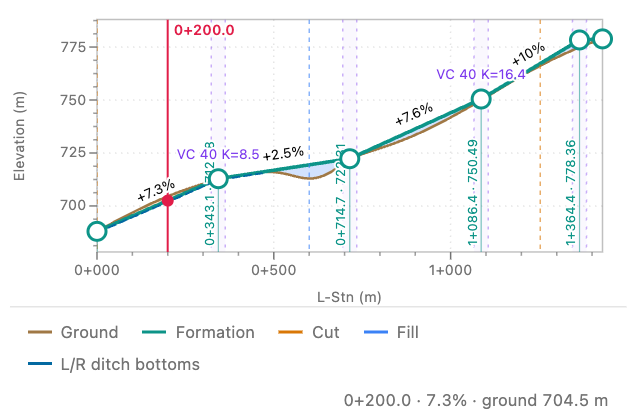
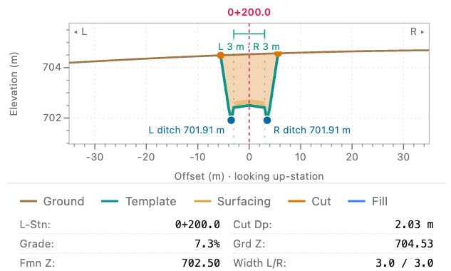

Read the cut depth at station 0+200
How far below the ground will the road sit 200 metres from its start? Follow one point on the Hillside access training road from the plan to the cross-section.
1. Locate the station on the plan
Open the training project, choose Guided mode, and use Linked overview. In the Station field below the drawing, enter 200 and press Enter.
Find the red point on the orange road. Its label reads 0+200.0, or 0 kilometres plus 200 metres along the alignment.

2. Read the profile along the road
In Road profile, follow the vertical red line down to the point on the formation. At this station the road climbs at 7.3%. The profile shows how the road rises along its length.

3. Read the cut across the road
In the detail pane, choose Section. At the centreline, the existing ground sits above the road formation. Read Cut Dp: 2.03 m below the drawing.
You can check it from the elevations. Ground (Grd Z) is 704.53 m and formation (Fmn Z) is 702.50 m. Their difference is the centreline cut depth for this training station.
